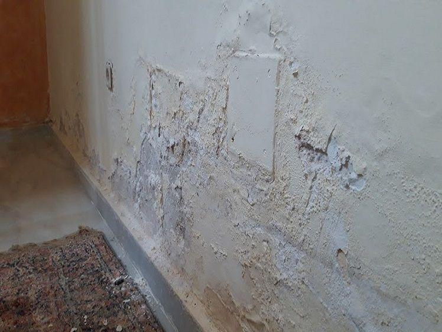

Understanding groundwater capillary action in historic walls and architectural treatment methods.
Rising damp is the upwards movement of water from the ground through a building's walls. This moisture moves through microscopic pores (capillaries) in bricks, stone, and mortar.
Groundwater contains soluble salts (nitrates and chlorides). As the damp climbs up, it evaporates on interior surfaces, leaving behind hygroscopic salts. These salts pull moisture from the surrounding air, keeping the wall permanently wet even during dry seasons.

Answer a few questions about your wall symptoms to run a preliminary moisture risk evaluation.
Select the option that best describes the touch and look of the damp areas.
The age of your property determines what type of damp-proofing was originally installed.
Select the primary symptoms observed on the affected wall surfaces.
Please complete all steps to see your custom diagnostic analysis.
We insert a state-of-the-art chemical Damp Proof Course (DPC) into the mortar bed to create a permanent water-repellent barrier.
We drill 12mm holes horizontally along the mortar joint at the lowest accessible brick course, spaced at strict 100mm intervals.
Injecting high-performance silane cream into the holes. The active compound diffuses to form a continuous water-resistant barrier.
We replace salt-contaminated plaster with our specialist salt-retardant backing to prevent residual damp from resurfacing.
Get answers to critical building inspection and damp proofing questions.
Due to gravity and capillary action constraints, rising damp rarely travels higher than 1.2 meters. If you notice damp stains higher up, it is likely penetrating damp or condensation.
A DPC is a waterproof barrier built into the lower wall of a house. Modern buildings use plastic sheets, whereas older structures might have slate DPCs, or none at all, requiring modern chemical cream injections.
Our high-performance silane cream injections are designed to diffuse fully through the mortar joint, forming a permanent silicone barrier. They come with a 25-year insurance-backed guarantee and usually outlast the building structure itself.
Standard home insurance policies typically classify rising damp as a maintenance issue resulting from natural wear and tear, rather than sudden accidental damage. Consequently, repairs are rarely covered, which is why early professional intervention saves long-term costs.
No, walls must dry out completely before applying final paint or wallpaper. The general rule is 1 month of drying time per 25mm of wall thickness. However, our process uses a salt-retarding backing plaster that permits a damp-proof primer coat to speed up the process.